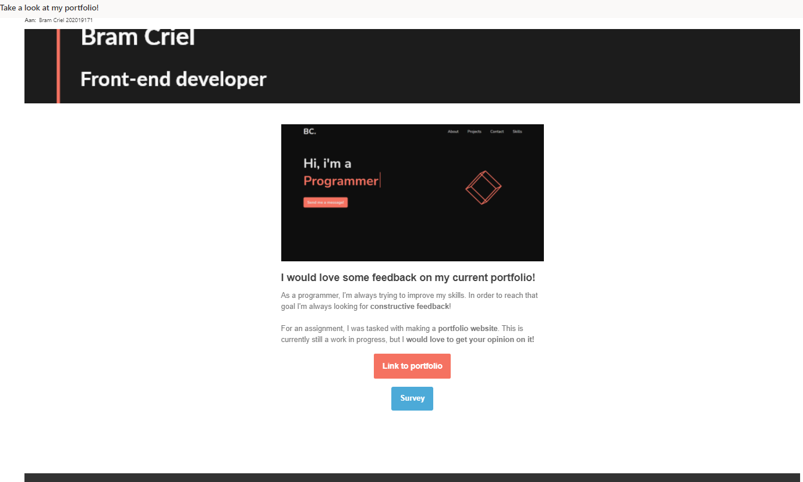
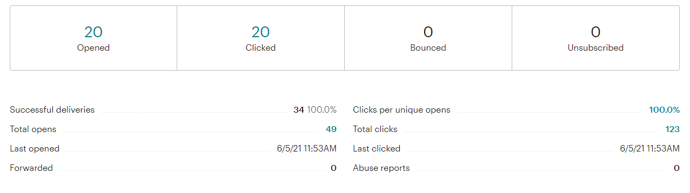
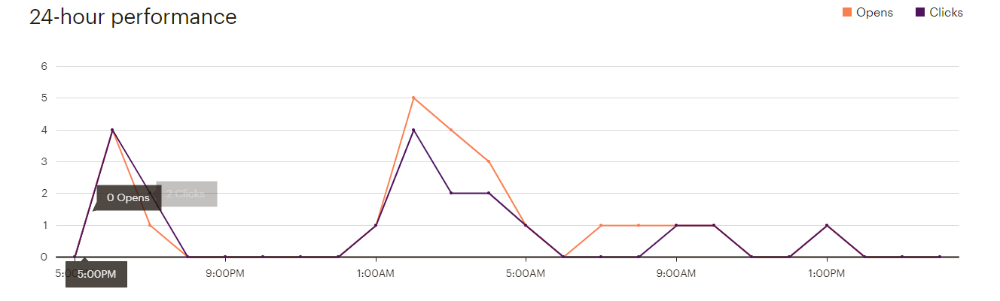
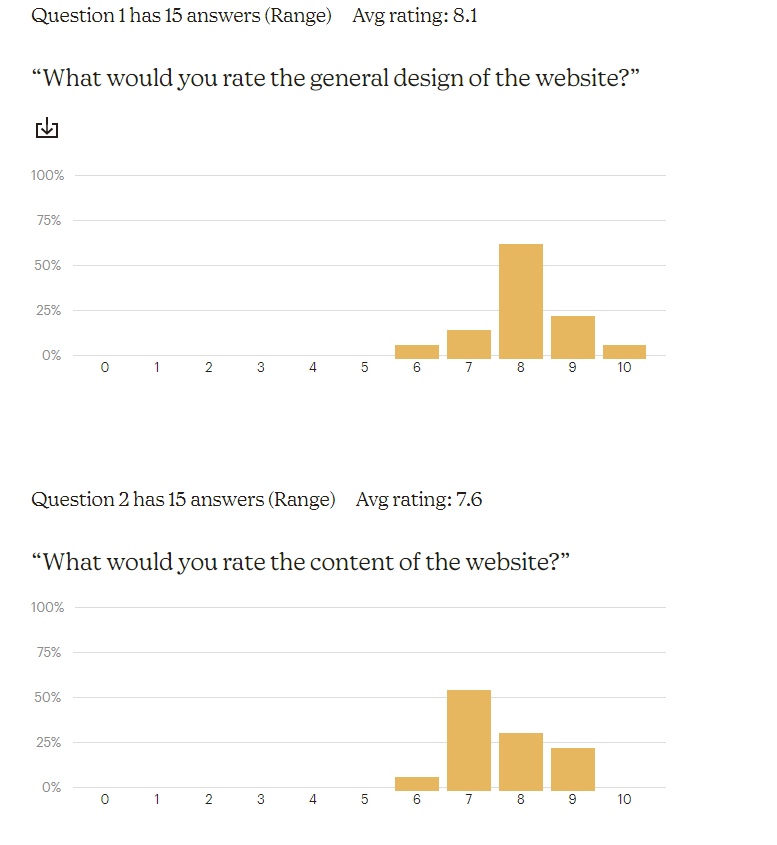
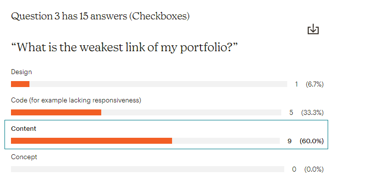

Getting started with Mailchimp
After going through the basics and making an account on Mailchimp, I went straight to making the survey. After the survey was created, I created the mail and sent it to all my contacts.
The following screenshot was taken after i added all the contacts:

Next up was checking how many people clicked on my mail, and used the call to action. The following picture shows the statistics right after the mail was created:

This is the result after a couple of days:

In general I experienced little to no issues in setting up Mailchimp, it was pretty intuitive. Adding all the contacts was easy aswell since the list of students we needed to add was already provided for (thanks for that).
Setting up the mail & survey
The main goal for my mail was to get people to fill in the survey. The goal for the survey was to gain insight on what people thought about my portfolio so that I knew what to change, so that was also indirectly the goal of the mail.
The picture below contains the mail that I sent:
As you can see, the main focus of the mail is the call to action. The picture shows a preview of the website so people can get a general idea of what they will see when they click on my portfolio.
Analysing the data
Mail data
The image below shows the activity the mail had.
 As you can see in the graphs and data provided in the images above, there has been a total of 49 clicks, with 20 of those being unique users.
Survey data
The survey was answered by a total of 15 unique users. The results are displayed in the images below.
 By analyzing the data that is provided, we can see that the average score for design is 8.1, while the average score given to content was 7.6. This falls in line with the other questoin 'What is the weakest link of my portfolio?' in which 60% of the answers were 'Content'.
Conclusion
Feedback is very valueable to everyone, but especially junior developers. Therefore Mailchimp provides a great service in helping with that. In this exercise i was able to learn the weak points of my portfolio, which i can now improve.